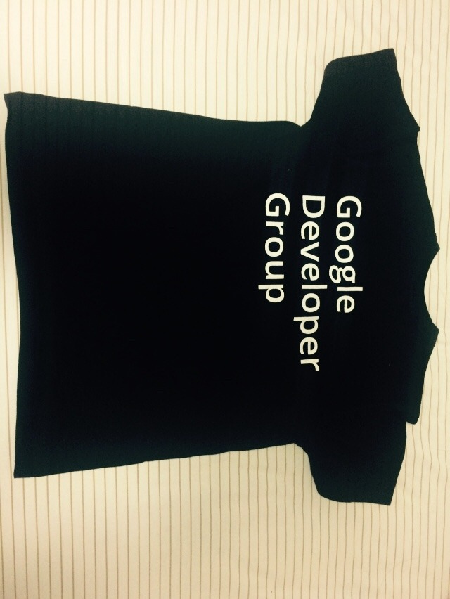
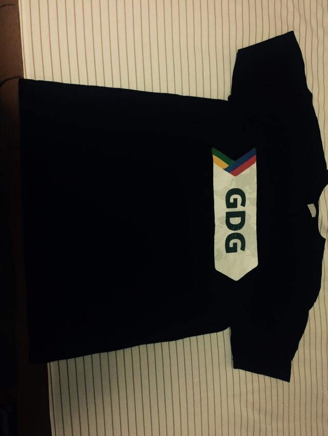
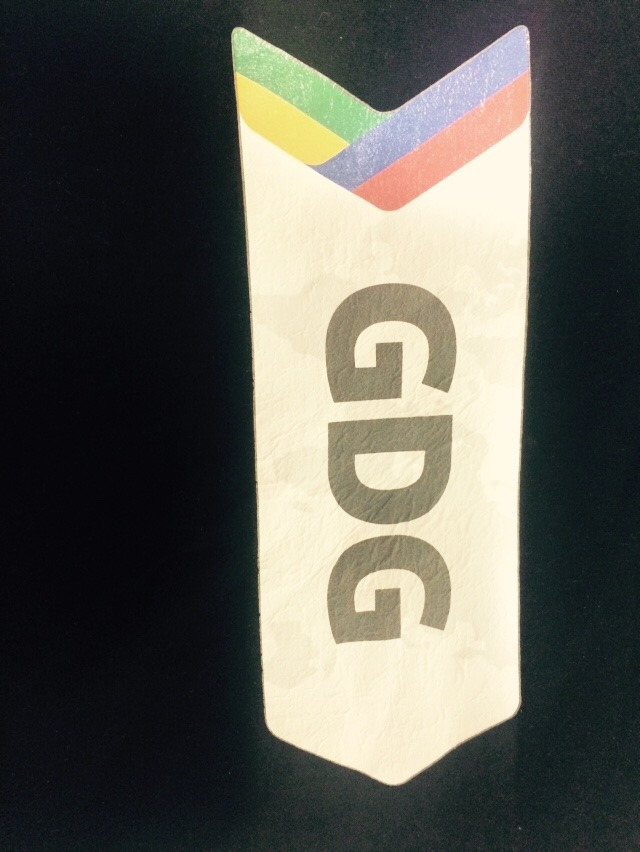

Google development t-shirts
Made in korea. Gdg korea에서 받은 듯. 프린트가 엉망이다. 면티인걸 제외하고는 5천원의 퀄리티. 언제 받은건진 기억이 안나고 아마 사이즈는 m인 것 같지만 허리라인따위는 들어가있지 않음.
많이 안늘어나는 재질이고 여름에 입으면 땀찬다. (…..) 다행인건 글자와 지디지 로고 이외에 딴짓을 하지 않았다는 점.
디자인 : 2/5
재질 : 3/5
총평 : 2/5